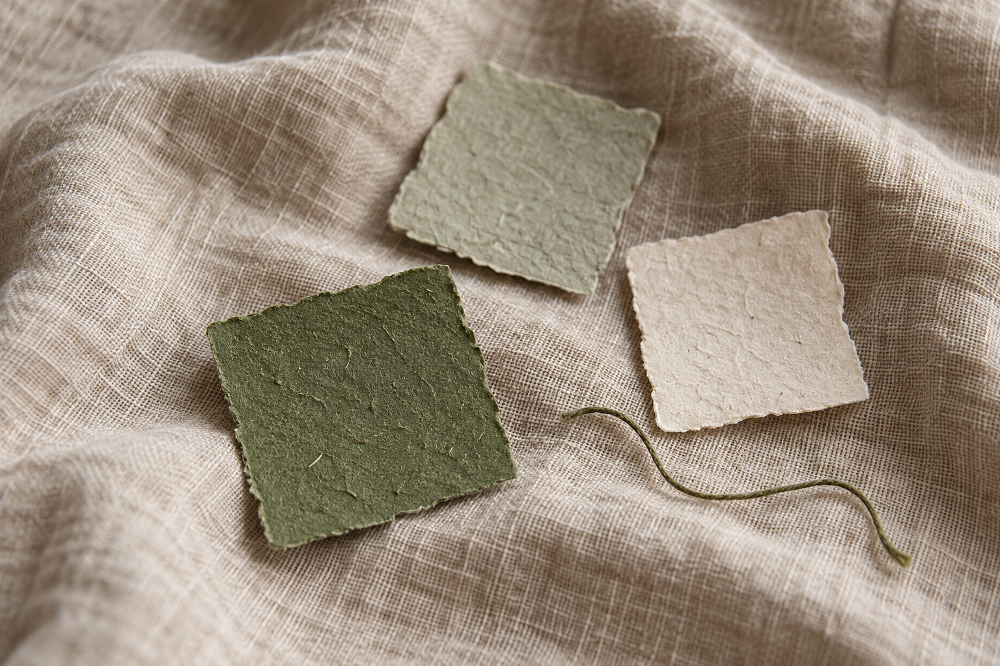

Orientation
Grounding for Racing Thoughts: A Gentle Version
Updated 2026-10-27
When thoughts race, grounding means resting attention on one ordinary detail already here. You are not emptying your mind. Look for a colour, feel the chair against your back, or name a nearby shape. One sense is enough. If a checklist feels like homework, name one fact: the wall is pale, or your feet are on the floor.
Grounding is not about clearing your mind. It is a way to give your attention one steadier place to rest for a moment.

When thoughts race, grounding is a gentle way to rest attention on one ordinary detail that is already here. You are not trying to empty your mind. Look at a colour, feel the chair, or name a nearby shape. One sense is enough.
Keep urgent care separate from grounding.
A grounding exercise is not a way to rule out a medical problem or make an emergency wait. If you think you may need urgent medical help, contact your local emergency service. If you are in immediate danger or at risk of harm, seek emergency or crisis support now.
Choose one sense, not a long checklist
Lists can be useful, but they can also feel like homework when you are overwhelmed. Start with one channel only. You might:
- Look for one colour that appears twice.
- Feel the pressure of your back against a chair.
- Notice the temperature of the air on your hand.
- Listen for the farthest sound you can hear.
- Name the shape of an object near you.
You are not trying to make thoughts disappear. You are giving one part of your attention a simple, observable job.
Use language that does not argue
Sometimes it is easier to state facts than to reassure yourself. “The wall is pale green.” “My feet are on the floor.” “There is a mug on the desk.” Facts do not ask you to believe anything bigger than what you can see or feel.
Let your body join in, if it wants to
Grounding can be still or physical. You might press your palms together, shift your weight from one foot to the other, stretch your fingers, or walk slowly to a different room. Keep the movement gentle and optional. If moving does not feel right, stay with a sound, texture, or visual detail instead.
Try Back’s Ground tool as a prompt, not a demand
Back’s Ground tool gives short prompts that help attention move toward the present. You can pause, repeat, skip, or leave at any point. The tool is there to reduce the number of decisions, not to tell you what your experience should be.
If nothing feels grounding
That can happen. You may prefer a different kind of support: a steady sound, a small distraction, contacting someone you trust, or professional help. Switching routes is allowed. If difficult moments are recurring, worsening, or affecting daily life, consider speaking with a qualified health professional.
Further reading
One detail is enough.
You can use Back’s Ground tool, or choose an ordinary detail around you.
Explore Back’s toolsBack works offline and needs no account. Open it when the next minute feels hard.
Download on the App Store